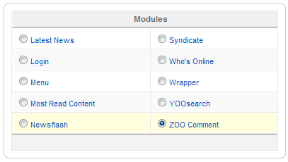
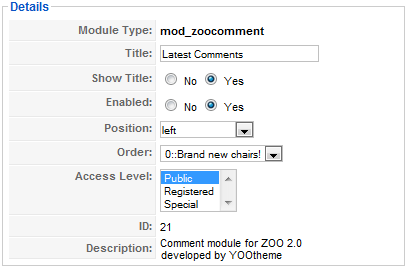
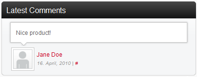

Set up the ZOO comment module
Learn how to set up and configure the ZOO comment module for your site. You can show comment of your app items in a Joomla module and publish it on a module position in your template. You can choose between different settings and styles like speech bubbles.
When you install the ZOO extension, the ZOO comment module is installed automatically.

To create a new ZOO comment module, log in to Joomla administration and click on Extensions » Module Manager. Click on ZOO Comment.

On the left, you have the typical configurations of a Joomla module. Set a module a name, enable it and choose the module position for it.

On the right you can set the module parameters. Here is a description of the fields.
- Theme: Select how the items should look like in the ZOO comment module. Choose between the predefined themes or create your own one. To do so, check out {doc: create-a-new-layout-with-positions text: this tutorial}.
- Application/Category: Here you can choose the app and one of its categories of which you want to show comments in this module. In the next option you can set, whether the tags of the subcategory of the chosen one should be included or not.
- Comment Count: Choose, how many comments you want to show in the module.
- Show Avatar /Avatar Size: Select whether the avatar of the comments should be displayed and select the size of it.
- Show Author: Choose if you want to show the comment author.
- Show Meta Data: Select whether you want to show the date of the comment and the link to the comment.
- Module Class Suffix: Set template specific module class suffixes to change the appearance of the module.

Click on Save in the top right corner and the comment module will be shown to your visitors.